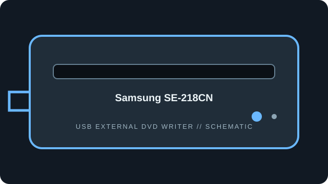

[ EXTERNAL DVD WRITERS // IDENTIFIED MODEL ]
Samsung SE-218CN
Portable external slim DVD writer in Samsung’s SE-218 series. The SE-218CN label and manual revision distinguish it from nearby SE-218 variants.

IDENTIFICATION: Match the full model/suffix and any bundled part number against the unit label and cited manual. Rated maximums depend on media, firmware, and operating mode; read support is not write support.
Documented specifications
| Catalog subcategory | External DVD writers |
|---|---|
| Exact model | Samsung SE-218CN |
| Read media formats | CD-ROM, CD-R/RW; DVD-ROM, DVD±R/RW, DVD±R DL and DVD-RAM. |
| Rated read speeds | DVD-ROM and recordable DVD up to 8×; DVD±R DL up to 6×; DVD-RAM up to 5×; CD-ROM/CD-R/RW up to 24×. |
| Write media formats | CD-R/RW; DVD±R, DVD±RW, DVD±R DL and DVD-RAM. |
| Rated write speeds | DVD±R up to 8×; DVD+RW up to 8×; DVD-RW up to 6×; DVD±R DL up to 6×; DVD-RAM up to 5×; CD-R/RW up to 24×. |
| USB interface | External slim USB 2.0, bus-powered. Use the included cable and a host USB port with adequate current; the specification does not imply USB 3.x link capability. |
| OS / firmware compatibility | Samsung support materials cover Windows and Mac host use for this generation; bundled software compatibility is narrower than USB optical-drive access. No public SE-218CN firmware revision is asserted here; use the exact SE-218CN support listing, not a CB/other suffix image. |
| Model distinction | SE-218CN is the exact model suffix in the manual family; do not transfer settings or firmware from SE-218CB without confirmation. |
Use, compatibility & preservation
- External slim USB 2.0, bus-powered. Use the included cable and a host USB port with adequate current; the specification does not imply USB 3.x link capability.
- Samsung support materials cover Windows and Mac host use for this generation; bundled software compatibility is narrower than USB optical-drive access. No public SE-218CN firmware revision is asserted here; use the exact SE-218CN support listing, not a CB/other suffix image.
- SE-218CN is the exact model suffix in the manual family; do not transfer settings or firmware from SE-218CB without confirmation.
- Record drive model and reported firmware, host OS, USB controller, application version, disc format, media brand and any read or verification errors when imaging.
- Keep checksummed image copies and logs; store discs in cases away from heat, moisture and direct sunlight. Avoid adhesive labels, abrasives and undocumented solvents.
Firmware support is model-specific: do not cross-flash a related product family or infer an update from an adjacent suffix.
Sources
- Samsung SE-218CN support and downloadsSamsung model-specific support/downloads locator.
- Samsung SE-218CB/CN quick-start manualSamsung manual explicitly covering the SE-218CB/CN family; confirm suffix and language/revision on the device.